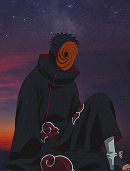
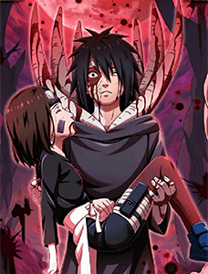

Obito Uchiha was a kind-hearted boy 😊 from the Hidden Leaf. Though often late and clumsy, he dreamed of becoming Hokage. He had deep feelings for Rin 💖 and a strong rivalry with Kakashi ⚔️. Despite his flaws, he believed in teamwork, hope, and protecting his comrades at all costs.
On a mission with Kakashi and Rin, Obito was crushed by a boulder 😢. Believing he would die, he entrusted his Sharingan eye to Kakashi. This heroic act was his way of showing loyalty and growth. That moment changed everything and began his path away from the light 🌑.
Miraculously saved by Madara Uchiha 🧓, Obito was healed but manipulated. When he witnessed Rin’s death at Kakashi’s hand, his heart shattered 💔. He lost all hope and embraced Madara’s vision of a false world peace. His ideals crumbled, and darkness consumed the once-hopeful ninja from Konoha 🕶️.
Obito hid his identity and operated under the alias “Tobi” 🎭. He used deception and manipulation to control Akatsuki and cause chaos. Masked and mysterious, he orchestrated tragic events across nations. Tobi appeared emotionless, but inside, Obito’s pain and memories of Rin still haunted him deeply every day 🌫️.

Determined to end pain, Obito aimed to cast Infinite Tsukuyomi 🌕, trapping everyone in a dream world. He believed illusion was better than a cruel reality. Influenced by Madara’s teachings, he became the plan’s mastermind. His desire for peace was twisted by grief, regret, and a broken heart 🌀.
Obito initiated the Fourth Great Ninja War ⚔️, fighting against Naruto and the allied forces. Through intense battles, Naruto challenged his beliefs and showed him true bonds. Torn between past and present, Obito slowly questioned everything. The war wasn’t just physical—it became a spiritual fight within himself 🔥.
Inspired by Naruto’s hope 🌟, Obito chose to protect the world he once wanted to destroy. He sacrificed his life saving Naruto and Kakashi. In his final moments, he saw Rin again and found peace 😇. Obito died not as a villain, but as a hero who finally returned to the light 🙏.
"All of Your Flippant Words and Ideals Will Become Lies."
@ 2025 | Made By Banty 🌐